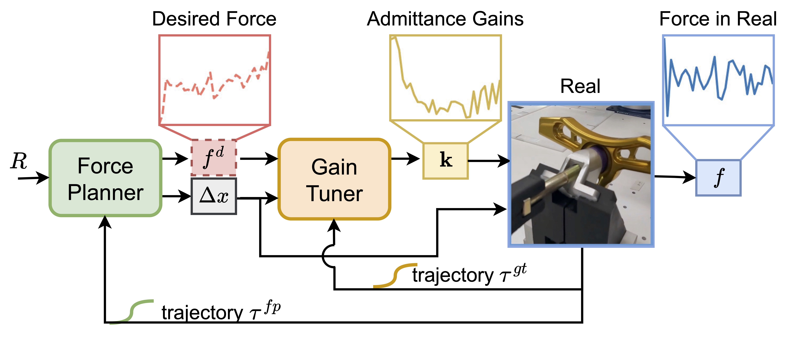

Abstract
Contact-rich manipulation tasks often exhibit a large sim-to-real gap. For instance, industrial assembly tasks frequently involve tight insertions where the clearance is less than 0.1 mm and can even be negative when dealing with a deformable receptacle. This narrow clearance leads to complex contact dynamics that are difficult to model accurately in simulation, making it challenging to transfer simulation-learned policies to physical robots.
We propose a novel framework for robustly learning manipulation skills for real-world tasks using simulated data only. Our framework consists of two main components: the “Force Planner” and the “Gain Tuner”. The Force Planner plans both the robot motion and desired contact forces, while the Gain Tuner dynamically adjusts the compliance control gains to accurately track the desired contact forces during task execution. The key insight of this work is that by adaptively adjusting the robot’s compliance control gains during task execution, we can modulate contact forces in the new environment, thereby generating trajectories similar to those trained in simulation and narrowing the sim-to-real gap.
Experimental results show that our method, trained in simulation on a generic square peg-and-hole task, can generalize to a variety of real-world insertion tasks involving narrow or even negative clearances, all without requiring any fine-tuning.
Method
In simulation, we collect data with an RL agent to offline train both the Gain Tuner and the Force Planner:

During real-world deployment, the Force Planner plans both the robot motion and desired contact forces. The Gain Tuner dynamically adjusts the compliance control gains to track the desired contact forces:
Experiments
In simulation, we collect data with an RL agent to offline train both the Gain Tuner and the Force Planner:
During real-world deployment, the Force Planner plans both the robot motion and desired contact forces. The Gain Tuner dynamically adjusts the compliance control gains to track the desired contact forces:
Video
BibTeX
@article{zhang2024dynamic
author = {Zhang, Xiang and Tomizuka, Masayoshi and Li, Hui},
title = {Bridging the Sim-to-Real Gap with Dynamic Compliance Tuning for Industrial Insertion},
journal = {ICRA},
year = {2024},
}